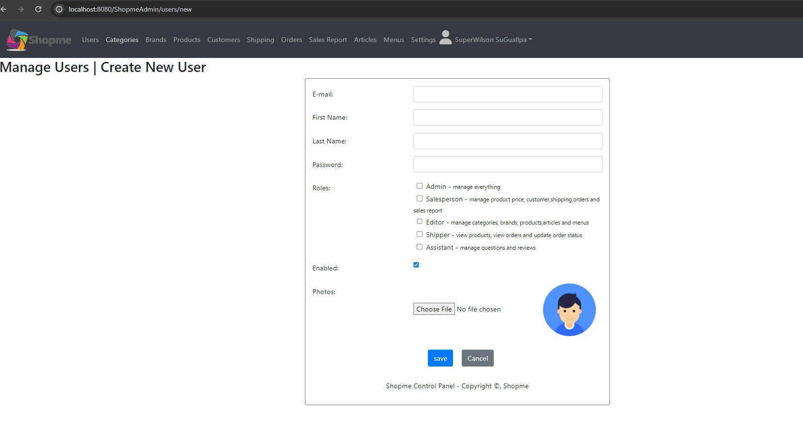
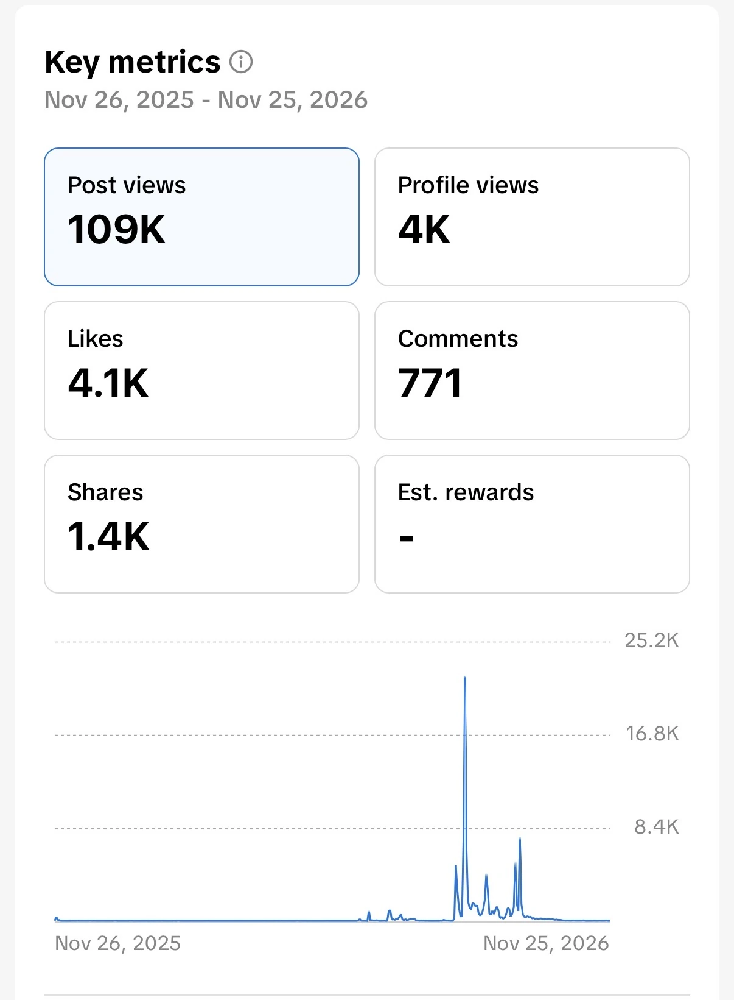
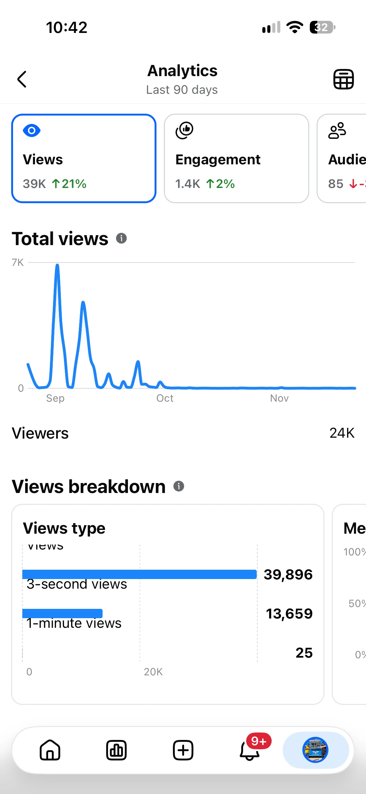
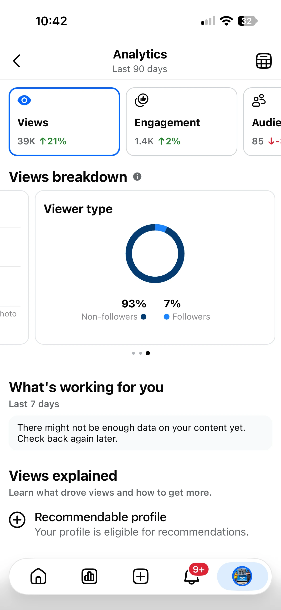

Customer service
Banking, customer assistance and issue resolution.
PROFESSIONAL PORTFOLIO / BILINGUAL ENGLISH & SPANISH
Fully bilingual English–Spanish professional with experience in customer service, banking, enterprise software and IT support. I combine clear communication and technical problem-solving to deliver practical solutions.
Open to professional opportunities

Banking, customer assistance and issue resolution.
Troubleshooting, software and networking fundamentals.
Fully bilingual in English and Spanish.
Bachelor’s degree and enterprise software experience.
01 / ABOUT
My background spans enterprise software development, banking customer service, technical support and small-business technology. I enjoy investigating problems, communicating clearly and finding practical solutions.
I hold a bachelor's degree in Computer Science and am fully bilingual in English and Spanish. I continue expanding my technical skills through networking studies and hands-on projects.
ERP application maintenance, debugging, SQL and web development.
Bilingual customer support, banking services, accurate records and issue resolution.
Equipment and network troubleshooting, cloud hosting and ongoing networking study.
The Flying Brisket began operations in June 2026. I developed bilingual promotional content and built an audience across TikTok and Facebook during the food truck's operating season, without paid advertising.
05 / EDUCATION
2017–2021
B.S. Computer Science
GPA 3.74 · Cum Laude · Dean’s List
2011–2016
A.A. General Studies
GPA 4.0 · Dean’s List
2003–2005
Technical Diploma · Automotive Repair
GPA 3.0
06 / CONTINUOUS LEARNING
Course completion certificates, not industry certifications.
Currently studying networking fundamentals through Jeremy's IT Lab to strengthen my understanding of network infrastructure, connectivity, and troubleshooting.
02 / CAREER
Technology & Business Support · Freelance, as needed
Provide customer service, technology, digital marketing and business support on an as-needed basis.
Customer Service Representative
Software Engineer
IT Helper · Internship
Customer Service · Server · Host · Cashier
03 / SELECTED WORK


Designed and deployed a responsive food truck website with menus, event locations and customer inquiries. Combined web development, cloud hosting and business promotion.
AI-assisted software prototype exploring restaurant order management, employee permissions, kitchen displays and payment workflows. Planned features are not represented as completed.

Java and Spring Boot e-commerce learning project.
Local ASP.NET application for party information, RSVP forms, validation and attendance summaries.
Responsive static website with accessible navigation, lightweight data visualization and optimized media.
04 / BUSINESS CASE STUDY
FIRST OPERATING SEASON · OPERATIONS BEGAN JUNE 2026 · 100% ORGANIC
The Flying Brisket — bilingual promotional content and audience development across TikTok and Facebook, without paid advertising.
Nov 26, 2025 – Nov 25, 2026
Bar scale: 0–30,000 views. Individual video counts are profile snapshots.
Last 90 days · Nov 2026 snapshot
7% followers
Reels accounted for nearly all Facebook views.
Sources: TikTok Studio and Facebook Business Dashboard screenshots. Reporting periods differ; combined counts are not unique people. Advertising spend is owner-reported. No sales attribution is claimed.



Select a screenshot to enlarge it.
07 / CONTACT
I’m open to opportunities in technology, customer service, IT support, business operations and digital marketing.
A tailored resume is available upon request. Please include the position or professional area you are recruiting for.
Email links open your email application. You can also copy the email address above or contact me on LinkedIn.